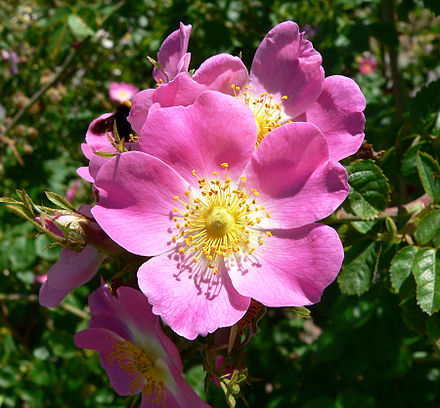
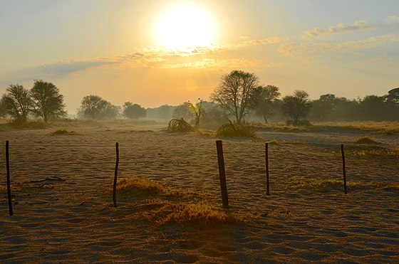
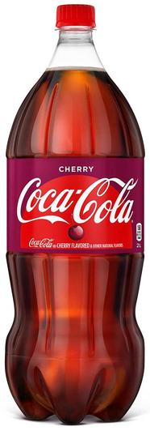
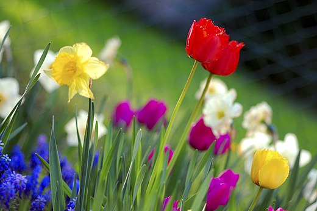

Hello, world! My name is Kylie.
This is a webpage all about me. My likes, dislikes, hopes, dreams, and favorite things.
Biography
I am a junior at Cox Mill High School. I've played soccer since I was six, and now play at a competive level. I was born in Atlanta, Georgia, and moved here when I was two. I have two younger brothers, three cats, and a dog.
In my spare time, I like to read, paint, draw on my chalkboard wall, hangout with friends, and watch movies.
My Favorite Quotation
"I'm in love with cities I've never been to and people I've never met" -Melody Truong
My Favorite Foods
- Soup
- Steak
- Tacos
- French Fries
- Pasta
My Top Eight Favorite Avengers Movies, in order
- Avengers
- Thor: Ragnarok
- Black Panther
- Captain America: Civil War
- Captain America: The Winter Soldier
- Doctor Strange
- Captain Marvel
- Ant Man and the Wasp
Countries I'd Like to Visit, and What I'd Like to Do There
- Italy
- Visit Venice
- Visit Rome
- Eat Food
- France
- Eiffel Tower
- Eat Food
- Mont St. Michel
- Greece
- Parthenon
- Eat Food
- History
Other Favorite Things
| Favorite Flower | Rose |  |
|---|---|---|
| Favorite Time of Day | Morning |  |
| Favorite Drink | Cherry Coke |  |
| Favorite Animal | Cat |  |
| Favorite Season | Spring |  |
| Favorite Color | Navy Blue |
Contact Information
Email: kferguson6796@cabarrus.k12.nc.us
Phone: 123-456-7890